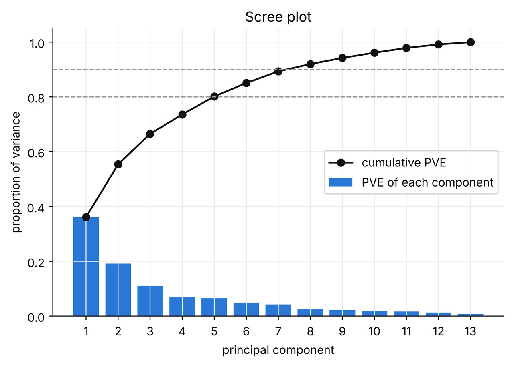
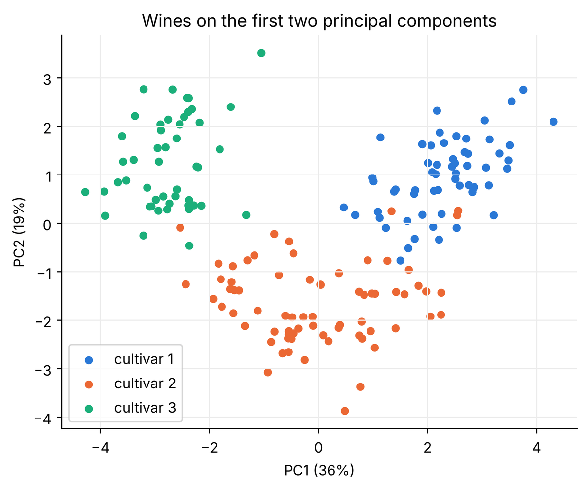
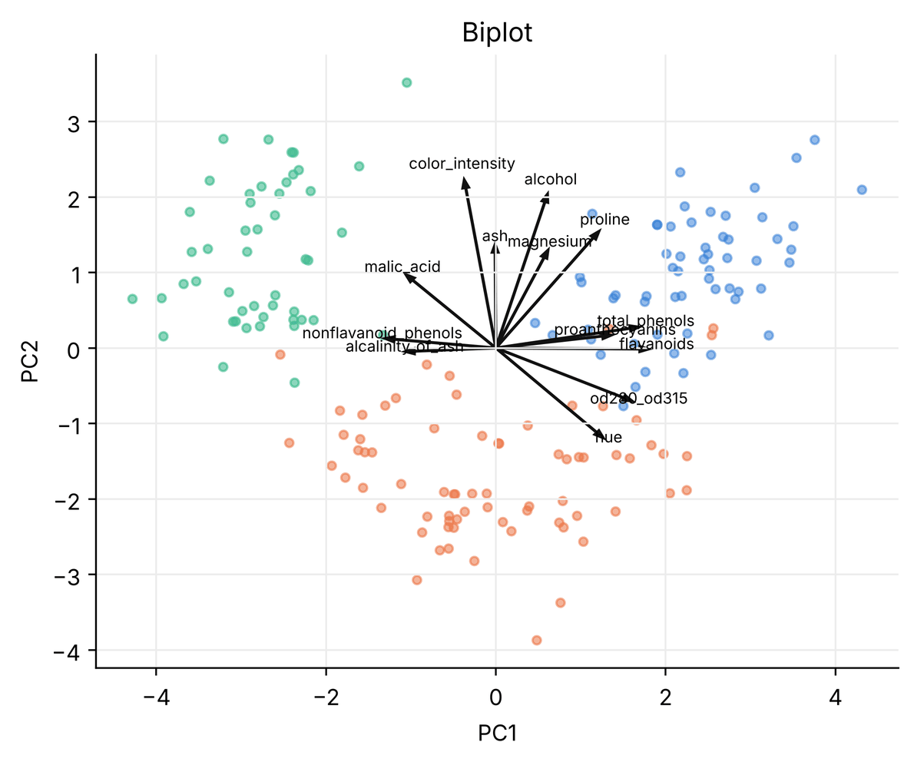
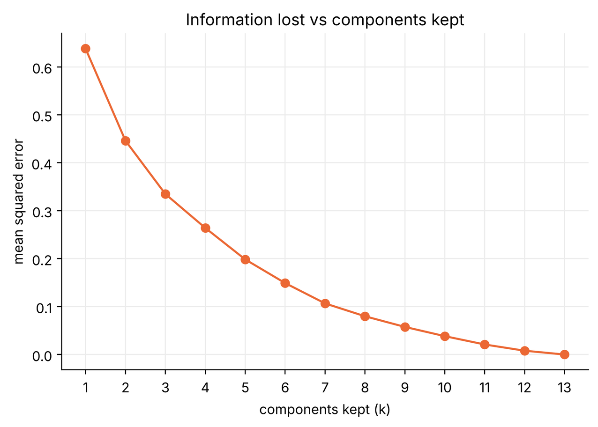

Practice · PCA in Python
PCA in Python, line by line.
A complete, runnable notebook that reduces 13 chemical measurements of 178 wines to a handful of principal components. You will standardise, fit PCA, read the scree plot, choose the number of components with three rules, interpret the loadings and draw a biplot. Hover over (or tap) any line of code to see what it does.
1 Hover over or tap any numbered line of code to highlight its explanation. Every output and chart below was produced by running this exact notebook.
1Import the libraries
- %config InlineBackend.figure_format = "retina"1
- import numpy as np2
- import pandas as pd3
- import matplotlib.pyplot as plt4
- from sklearn.preprocessing import StandardScaler5
- from sklearn.decomposition import PCA6
- from sklearn.cluster import KMeans7
- from sklearn.metrics import adjusted_rand_score8
-
- plt.rcParams["figure.figsize"] = (7, 4.5)9
- plt.rcParams["axes.spines.top"] = False10
- plt.rcParams["axes.spines.right"] = False10
- plt.rcParams["axes.grid"] = True11
- plt.rcParams["grid.color"] = "#ececec"11
- COLORS = ["#2a78d6", "#eb6834", "#1baf7a", "#eda100", "#e87ba4", "#008300"]12
2Load the dataset
The wine dataset has 178 wines from three cultivars (grape growers) and 13 chemical measurements. The cultivar column is the answer key: we will not give it to PCA, only use it afterwards to colour the plots.
- url = "https://raw.githubusercontent.com/SaeedSerwan/unsupervised/main/data/wine.csv"1
- df = pd.read_csv(url)2
- X = df.drop(columns="cultivar")3
- y = df["cultivar"]4
- print("X:", X.shape, " cultivars:", sorted(y.unique().tolist()))5
- X.head()6
X: (178, 13) cultivars: [1, 2, 3]
| alcohol | malic_acid | ash | alcalinity_of_ash | magnesium | total_phenols | flavanoids | nonflavanoid_phenols | proanthocyanins | color_intensity | hue | od280_od315 | proline | |
|---|---|---|---|---|---|---|---|---|---|---|---|---|---|
| 0 | 14.23 | 1.71 | 2.43 | 15.6 | 127.0 | 2.80 | 3.06 | 0.28 | 2.29 | 5.64 | 1.04 | 3.92 | 1065.0 |
| 1 | 13.20 | 1.78 | 2.14 | 11.2 | 100.0 | 2.65 | 2.76 | 0.26 | 1.28 | 4.38 | 1.05 | 3.40 | 1050.0 |
| 2 | 13.16 | 2.36 | 2.67 | 18.6 | 101.0 | 2.80 | 3.24 | 0.30 | 2.81 | 5.68 | 1.03 | 3.17 | 1185.0 |
| 3 | 14.37 | 1.95 | 2.50 | 16.8 | 113.0 | 3.85 | 3.49 | 0.24 | 2.18 | 7.80 | 0.86 | 3.45 | 1480.0 |
| 4 | 13.24 | 2.59 | 2.87 | 21.0 | 118.0 | 2.80 | 2.69 | 0.39 | 1.82 | 4.32 | 1.04 | 2.93 | 735.0 |
3Why we must standardise
PCA chases variance. Look at how differently the columns are scaled.
- X.var().sort_values(ascending=False).round(2).head(6)1
proline 99166.72 magnesium 203.99 alcalinity_of_ash 11.15 color_intensity 5.37 malic_acid 1.25 flavanoids 1.00 dtype: float64
- pca_raw = PCA().fit(X)1
- print("PC1 share of variance (raw):", round(pca_raw.explained_variance_ratio_[0], 4))2
- print("Largest PC1 loading:", X.columns[np.argmax(np.abs(pca_raw.components_[0]))])3
PC1 share of variance (raw): 0.9981 Largest PC1 loading: proline
That is not a discovery, it is an artefact of the units. So we standardise first.
- X_scaled = StandardScaler().fit_transform(X)1
- pca = PCA()2
- scores = pca.fit_transform(X_scaled)3
- print("scores shape:", scores.shape)4
scores shape: (178, 13)
4How much variance does each component explain?
explained_variance_ratio_ is the PVE of each component. Its running total is the cumulative PVE.
- pve = pca.explained_variance_ratio_1
- cum = np.cumsum(pve)2
- table = pd.DataFrame({"PVE": pve, "cumulative": cum, "eigenvalue": pca.explained_variance_},3
- index=[f"PC{i}" for i in range(1, 14)]).round(3)3
- table.head(8)4
| PVE | cumulative | eigenvalue | |
|---|---|---|---|
| PC1 | 0.362 | 0.362 | 4.732 |
| PC2 | 0.192 | 0.554 | 2.511 |
| PC3 | 0.111 | 0.665 | 1.454 |
| PC4 | 0.071 | 0.736 | 0.924 |
| PC5 | 0.066 | 0.802 | 0.858 |
| PC6 | 0.049 | 0.851 | 0.645 |
| PC7 | 0.042 | 0.893 | 0.554 |
| PC8 | 0.027 | 0.920 | 0.350 |
- fig, ax = plt.subplots()1
- comps = np.arange(1, 14)2
- ax.bar(comps, pve, color="#2a78d6", label="PVE of each component")3
- ax.plot(comps, cum, "o-", color="#111", label="cumulative PVE")4
- for t in (0.8, 0.9):5
- ax.axhline(t, color="#999", linestyle="--", linewidth=1)6
- ax.set(xlabel="principal component", ylabel="proportion of variance", xticks=comps, title="Scree plot")7
- ax.legend()8
- plt.show()9

5Choose the number of components
Three common rules. When they disagree, your purpose decides: 2 for a plot, more for feeding a model.
- k_90 = int(np.argmax(cum >= 0.90)) + 11
- k_80 = int(np.argmax(cum >= 0.80)) + 12
- k_kaiser = int(np.sum(pca.explained_variance_ > 1))3
- print(f"80% rule: k = {k_80}")4
- print(f"90% rule: k = {k_90}")4
- print(f"Kaiser: k = {k_kaiser}")4
- print(f"First 2 components keep {cum[1]:.1%} of the variance")5
80% rule: k = 5 90% rule: k = 8 Kaiser: k = 3 First 2 components keep 55.4% of the variance
- pca90 = PCA(n_components=0.90).fit(X_scaled)1
- print("components kept:", pca90.n_components_)2
components kept: 8
63D → 2D → 1D on simple data
Before interpreting the wine components, see how the PVE reveals a dataset's true dimension. We make three 3D datasets with NumPy: a flat sheet, a cigar and a round ball.
- rng = np.random.default_rng(0)1
- n = 3002
- a, b, c = rng.normal(size=(3, n))3
- shapes = {4
- "flat sheet": np.c_[a + b, a - b, 0.05 * c],5
- "cigar": np.c_[a, a + 0.1 * b, a + 0.1 * c],6
- "round ball": np.c_[a, b, c],7
- }7
- for name, data in shapes.items():8
- p = PCA().fit(data).explained_variance_ratio_9
- print(f"{name:11s} PVE = {np.round(p, 3)} cumulative = {np.round(np.cumsum(p), 3)}")10
flat sheet PVE = [0.53 0.47 0.001] cumulative = [0.53 0.999 1. ] cigar PVE = [0.996 0.003 0.001] cumulative = [0.996 0.999 1. ] round ball PVE = [0.377 0.331 0.292] cumulative = [0.377 0.708 1. ]
- Flat sheet: two components keep ~100% → it is really 2D: keep 2.
- Cigar: one component keeps ~99% → it is really 1D: keep 1.
- Round ball: about a third each → nothing to drop: PCA cannot reduce it.
The interactive version, with seven datasets, is on the PCA page.
7Plot the wines in 2D
The first two score columns are each wine's position on PC1 and PC2. We colour by cultivar only to check the result; PCA never saw it.
- fig, ax = plt.subplots(figsize=(6.5, 5))1
- for i, cult in enumerate([1, 2, 3]):2
- m = (y == cult).to_numpy()3
- ax.scatter(scores[m, 0], scores[m, 1], s=22, color=COLORS[i], label=f"cultivar {cult}")4
- ax.set(xlabel=f"PC1 ({pve[0]:.0%})", ylabel=f"PC2 ({pve[1]:.0%})", title="Wines on the first two principal components")5
- ax.legend()6
- plt.show()7

Thirteen columns squeezed into two, and the three cultivars still separate almost perfectly.
8What are the components made of? Loadings
components_ holds the loadings: one row per component, one column per original feature. Each row has length 1.
- loadings = pd.DataFrame(pca.components_[:2].T, index=X.columns, columns=["PC1", "PC2"])1
- loadings.sort_values("PC1").round(2)2
| PC1 | PC2 | |
|---|---|---|
| nonflavanoid_phenols | -0.30 | 0.03 |
| malic_acid | -0.25 | 0.22 |
| alcalinity_of_ash | -0.24 | -0.01 |
| color_intensity | -0.09 | 0.53 |
| ash | -0.00 | 0.32 |
| magnesium | 0.14 | 0.30 |
| alcohol | 0.14 | 0.48 |
| proline | 0.29 | 0.36 |
| hue | 0.30 | -0.28 |
| proanthocyanins | 0.31 | 0.04 |
| od280_od315 | 0.38 | -0.16 |
| total_phenols | 0.39 | 0.07 |
| flavanoids | 0.42 | -0.00 |
- fig, ax = plt.subplots(figsize=(6.5, 5))1
- ax.scatter(scores[:, 0], scores[:, 1], s=14, c=[COLORS[c - 1] for c in y], alpha=0.5)2
- scale = 43
- for name, (l1, l2) in loadings.iterrows():4
- ax.arrow(0, 0, l1 * scale, l2 * scale, color="#111", width=0.01, head_width=0.08)5
- ax.text(l1 * scale * 1.12, l2 * scale * 1.12, name, fontsize=7, ha="center")6
- ax.set(xlabel="PC1", ylabel="PC2", title="Biplot")7
- plt.show()8

Features pointing the same way are positively correlated; arrows pointing towards a group of wines show what is high for those wines. Flavanoids and total phenols pull towards cultivar 1, colour intensity and malic acid towards cultivar 3.
9What do we lose? Reconstruction error
Keep k components, map back to the original space with inverse_transform, and measure the error.
- errors = []1
- for k in range(1, 14):2
- p = PCA(n_components=k).fit(X_scaled)3
- X_back = p.inverse_transform(p.transform(X_scaled))4
- errors.append(np.mean((X_scaled - X_back) ** 2))5
-
- fig, ax = plt.subplots()6
- ax.plot(range(1, 14), errors, "o-", color="#eb6834")7
- ax.set(xlabel="components kept (k)", ylabel="mean squared error", xticks=range(1, 14), title="Information lost vs components kept")8
- plt.show()9

The error equals the share of variance we dropped: it is $1 - $ cumulative PVE. Keeping all 13 components rebuilds the data perfectly (error 0).
10PCA before clustering
A common pipeline: standardise → PCA → K-means. Clustering on a few component scores removes noise and makes results easy to plot.
- Z2 = scores[:, :2]1
- labels = KMeans(n_clusters=3, n_init=10, random_state=0).fit_predict(Z2)2
- print(pd.crosstab(y, labels, rownames=["cultivar"], colnames=["cluster"]))3
- print("Adjusted Rand index:", round(adjusted_rand_score(y, labels), 3))4
cluster 0 1 2 cultivar 1 0 59 0 2 65 5 1 3 0 0 48 Adjusted Rand index: 0.895
11Summary
| Step | Code |
|---|---|
| Standardise | X_scaled = StandardScaler().fit_transform(X) |
| Fit all components | pca = PCA().fit(X_scaled) |
| Variance explained | pca.explained_variance_ratio_, np.cumsum(...) |
| Choose k | 90% rule, Kaiser (explained_variance_ > 1), elbow, or PCA(n_components=0.90) |
| Scores | pca.transform(X_scaled) |
| Loadings | pca.components_ |
| Rebuild | pca.inverse_transform(scores) |
12Exercises
- Repeat section 7 without standardising. What happens to the picture, and why?
- How many components does an 80% threshold keep? A 95% threshold?
- Which three features have the largest absolute loadings on PC2? Give PC2 a name.
- Cluster on 5 components instead of 2. Does the adjusted Rand index improve?